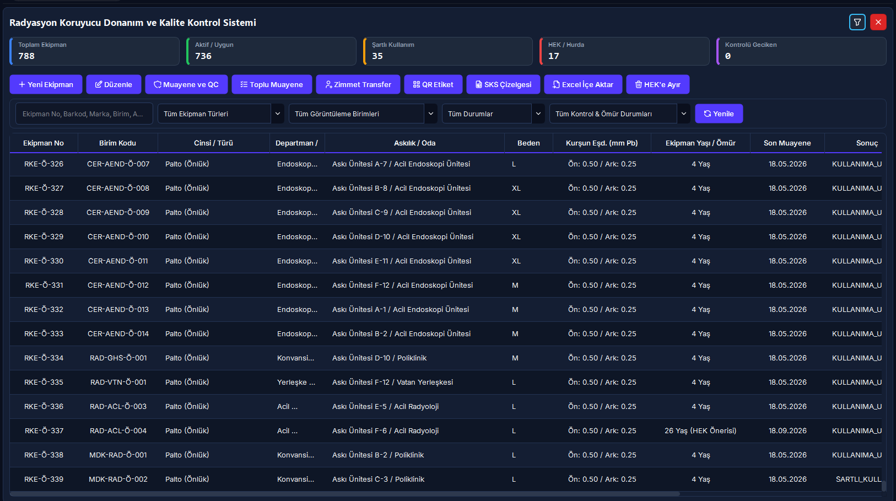
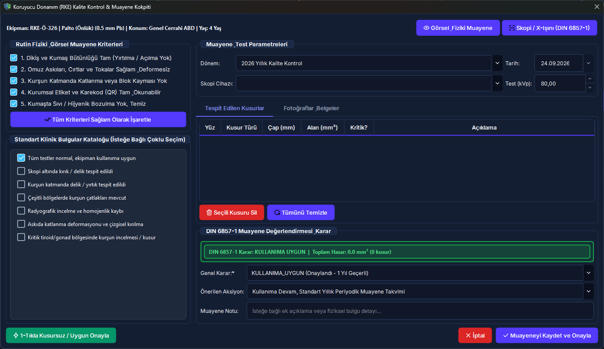
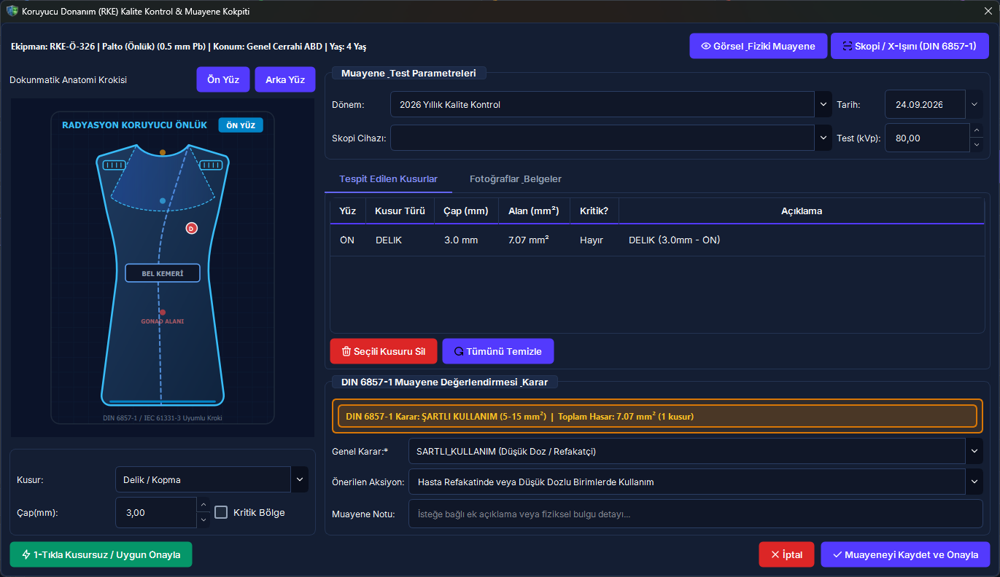

Radyasyon Koruyucu Ekipman (RKE) ve DIN 6857-1 Muayenesi
Radyoloji, nükleer tıp, kardiyoloji ve ameliyathanelerde kullanılan kurşun önlük, yelek-etek, tiroid ve gonad koruyucuları ile koruyucu gözlük ve paravanların akıllı kodlamasını, bütünleşik görsel ve skopi SVG silüet muayenesini, DIN 6857-1 / IEC 61331-3 karar motorunu, 10+ yıl ömür takibini, toplu muayeneyi, hurda devir kilidini ve SKS 6.1 resmi denetim çizelgelerini yönetmenizi sağlar.
Kısa Reçete: RKE Kalite Kontrol ve Kusur Haritalama
Koruyucu önlük veya donanımın yıllık fiziki ve skopi kontrolünün yapılarak DIN 6857-1 kararının tescil edilmesi ve ekipman statüsünün güncellenmesi.
RKE listesinde satırı seçip [Muayene ve QC] butonuna tıklayın; kusursuz ekipmanda doğrudan [1-Tıkla Kusursuz / Uygun Onayla] kullanın ya da ön/arka silüet krokisine tıklayıp kusur çapını girerek [Muayeneyi Kaydet ve Onayla] butonuna basın.
Dairesel hasar alanı (π · (d/2)²) ve kritik bölge otomatik hesaplanır; HEK, Şartlı Kullanım veya Uygun kararı kronolojik en güncel muayeneye göre envantere işlenir ve hasar fotoğrafları şifreli kasaya alınır.
5N1K Kural ve Arayüz Çözümleme Tablosu
Çift katmanlı kodlama, skopi SVG kusur krokisi, DIN 6857-1 karar eşikleri, toplu muayene, hurda devir güvenlik kilidi, 300 DPI QR paketi ve RKS onay akışı.
Kritik Sahada Yanlış Bilinen Kurallar (Mit Avcısı)
Süreç Akış Şeması
Blok Kayması veya 10+ Yıl?"} F -->|Evet| G["HEK / Hurdaya Ayır"] F -->|5–15 mm² veya Fiziki Kusur| H["Şartlı Kullanım"] F -->|Sağlam & <= 5 mm²| I["Kullanıma Uygun (1 Yıl)"] end subgraph S3 ["3. AŞAMA: ARŞİV, TRANSFER KİLİDİ VE SKS"] direction LR J["Hasar Fotoğrafı / Skopi AES-256 Arşivi"] K["Hurda Devir Güvenlik Kilidi & RKS Onayı"] L["300 DPI QR Pasaport & SKS 6.1 Çizelgesi"] end C ==> D G & H & I ==> J J ==> K K ==> L
- Envanter ve Kodlama: Ekipman kaydında tür ve birim bazlı çift katmanlı kod üretilir, ön/arka kurşun kalınlığı ve giriş tarihine göre ekipman yaşı izlenir.
- Bütünleşik Muayene ve Karar Motoru: 5 fiziki kriter ile Ön/Arka SVG kroki kusurları birlikte değerlendirilir; kritik organ hasarı, blok kayması veya 15 mm² aşımı HEK kararı üretirken 5–15 mm² çevre kusuru Şartlı Kullanım, sağlam kayıtlar Kullanıma Uygun sonucu alır.
- Arşiv, Kilit ve SKS Çıktısı: Fotoğraf ve röntgenler Evrak Kasasında şifrelenir, HEK ekipmanların zimmet devri kilitlenir, Muayene Geçmişinden RKS onayı verilerek 300 DPI QR ve SKS 6.1 çizelgesi üretilir.
Arayüz Ekran Görünümleri




Adım Adım İşlem Rehberi
1. Yeni Ekipman Kaydı, Akıllı Kodlama ve Zimmet Transferi
- RKE Envanter ekranında [Yeni Ekipman] butonuna tıklayın; tip, Anabilim Dalı ve Alt Birim seçildiğinde sistem merkezi Ekipman No ile birim bazlı Koruyucu No bilgisini otomatik önerir (çoklu aktarım için [Excel İçe Aktar] kullanabilirsiniz).
- Kuruma giriş tarihi, marka, beden, askılık konumu ile ön/arka kurşun eşdeğerini (mm Pb) doldurup [Kaydet] butonuna basın.
- Önlüğü başka bir personele veya birime devretmek için satırı seçip [Zimmet Transfer] butonuna tıklayın, hedef birim ve teslim bilgilerini girip [Transferi Onayla] butonuna basın (HEK, Kayıp veya Kullanım Dışı kayıtlarda transfer güvenlik kilidi devreye girer).
2. Bütünleşik Tekil Muayene, SVG Kroki Pinleme ve 1-Tıkla Onay
- Envanterde ekipmanı seçip [Muayene ve QC] butonuna tıklayın; üstten [Görsel / Fiziki Muayene] veya [Skopi / X-Işını (DIN 6857-1)] modları arasında geçiş yapın.
- Ekipman tümüyle sağlamsa doğrudan alt soldaki [1-Tıkla Kusursuz / Uygun Onayla] butonunu kullanın; aksi halde 5 rutin fiziki kriteri ve klinik bulguları işaretleyin.
- Skopi altında kusur tespit ettiğinizde [Ön Yüz] veya [Arka Yüz] görünümünü seçip tuvalde hasarlı noktaya tıklayın; açılan pencerede kusur türü ile çap (mm) değerini girin (kritik organ bölgesi otomatik algılanır ve alan mm² cinsinden hesaplanır).
- Varsa Fotoğraflar ve Belgeler sekmesinden [Fotoğraf / Röntgen Ekle] ile görselleri şifreli kasaya ekleyin; canlı karar rozetini doğrulayıp [Muayeneyi Kaydet ve Onayla] butonuna tıklayın.
3. Toplu Muayene, Muayene Geçmişi ve RKS Onayı
- Çok sayıda ekipmanın yıllık kontrolünü tamamlamak için [Toplu Muayene] butonuna tıklayın; [Gecikenleri ve 10+ Yaşlıları Seç] ile tarihi geçenleri otomatik işaretleyin, skopi cihazı ve kararı seçip (isterseniz 10+ Yıl Aşanları Otomatik HEK (Hurda) Yap seçeneğini açarak) [Seçili Ekipmanları Kaydet] butonuna basın.
- Geçmiş taramaları incelemek için Muayene ve Kontrol Geçmişi ekranını açın; [Detay ve Rapor] ile A4 raporu ve ön/arka krokiyi görüntüleyin, [Düzenle / Revize Et] veya [Belge / Fotoğraf Ekle] ile ekleme yapın, sağ tık menüsünden RKS Olarak Onayla komutuyla kaydı onaylayın.
4. QR Pasaport, SKS Çizelgesi, Toplu HEK ve Web Mobil Muayene
- Tekil veya çoklu QR basımı için araç çubuğundan [QR Etiket] butonuna tıklayın: tek satır seçiliyken pasaport önizlemesinden [PNG Olarak Kaydet] veya [Yazıcıya Gönder], çoklu seçimde ya da seçimsiz basımda 300 DPI PNG etiketleri ve baskı şartnamesini içeren ZIP paketini indirin.
- Denetim çizelgeleri için [Dışa Aktar] menüsünden SKS 6.1 RKE çizelgesini Excel/PDF/Word formatında alın; hurdaya ayrılacak birden çok önlüğü Ctrl veya Shift ile seçip [HEK Tutanağı] butonundan toplu komisyon tutanağı üretin (tekil hurdaya çekmek için [HEK'e Ayır] kullanılır).
- Web Portalı ve Mobil QR Saha Akışı: Saha kullanıcısı Web Portalındaki RKE Eşleştirme ve Seçim Merkezi üzerinden yalnızca görevli olduğu birimleri filtreleyebilir ya da önlükteki QR etiketi [QR Tara] düğmesiyle okutup satır içi RKE Saha Pasaport Kartını açabilir. Sayfa içindeki üç sekmeden (1. DIN 6857-1 Muayene ve Kroki, 2. Askılık/Sayım ve Muayene Geçmişi, 3. Birim Bazlı Toplu Muayene) sürekli açık 5 fiziki kontrol kriteri, kVp/mAs değerleri ve dokunmatik Ön/Arka SVG silüeti üzerinde görünür kusur pinleriyle muayene tamamlanıp şifreli hasar fotoğrafı eklenebilir; görevli birim kapsamındaki askılık sayımı ve toplu muayeneler sahadan kaydedilebilir.
Sıkça Sorulan Sorular (SSS)
10+ yılını dolduran bir kurşun önlük skopide tamamen sağlam çıkarsa ne olur?
Sistem 5–10 yıl arası ekipmanları yaşlı/dikkat takibine alır; 10 yıl ve üzerine çıktığında ise malzeme yorulması riskine karşı otomatik HEK önerisi üretir. Tekil kokpitte nihai klinik karar medikal fizikçinin ve kurum yetkililerinin değerlendirmesiyle onaylanır; toplu muayene ekranında ise 10+ yaşlıları otomatik HEK yapma seçeneği kullanıcı kontrolüne bırakılmıştır.
Bir RKE ekipman tanımı (türü) silindiğinde eski muayene ve envanter kayıtları silinir mi?
Hayır. Silinmek istenen RKE türüne bağlı en az bir ekipman veya muayene geçmişi varsa sistem veri bütünlüğünü korumak adına kaydı fiziksel silmez, Pasife alarak yalnızca yeni ekipman açılır listelerinden gizler; hiç kullanılmamış tanımlar kalıcı silinir.
Skopi çekiminden gelen hasar fotoğrafları ve PDF belgeleri nerede saklanır?
Yüklenen tüm röntgen, skopi görseli ve hasar fotoğrafları yerel disk klasörlerinde açık dosya olarak bırakılmaz; veritabanı içinde AES-256 Fernet ile şifrelenerek Evrak Kasasında saklanır ve yalnızca yetkili kullanıcılar tarafından geçici olarak deşifre edilip görüntülenir.
Önlükte hem dikiş açılması hem küçük bir non-kritik delik varsa hangi karar geçerli olur?
Bütünleşik karar motoru her zaman en katı güvenlik kuralını uygular. İncelenen 5 fiziki kriterdeki hata ile SVG kroki üzerindeki hasar birlikte değerlendirilir; herhangi bir katmanda HEK kriteri oluşursa (örneğin kurşun blok kayması veya kritik bölge deliği) toplam karar doğrudan HEK / Hurdaya Ayır olur.